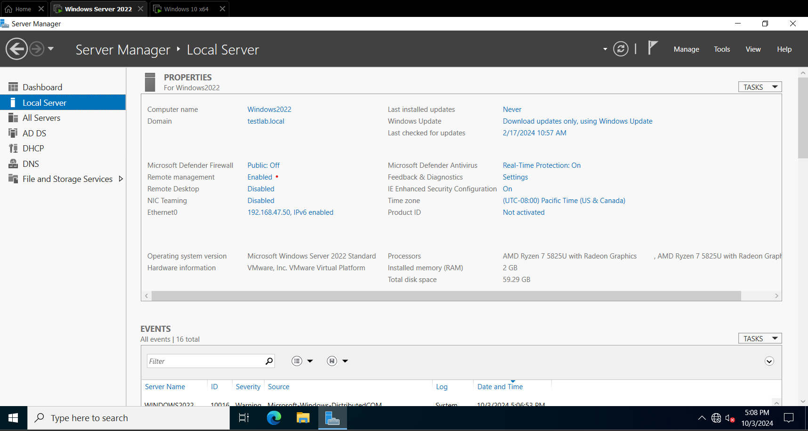

Topology of the Network

Window Server 2019
Screen shot of Main Page for Window Server 2019.
Windows 10 PC
Screen shot of Windows 10 VM who's domain is part of the Window server domain.

This Project focuses on Creating an Active Directory on a Window Server 2019 Virtual machine and connecting it to a Windows 10 PC that is on the same network as the server to the server's domain.
Screen shot of Main Page for Window Server 2019. Screen shot of Windows 10 VM who's domain is part of the Window server domain.Topology of the Network
Window Server 2019
Windows 10 PC